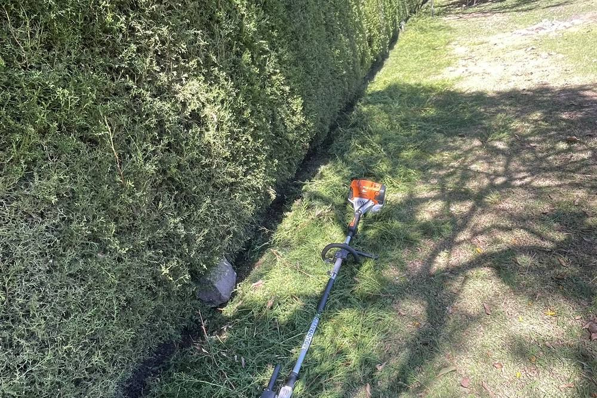
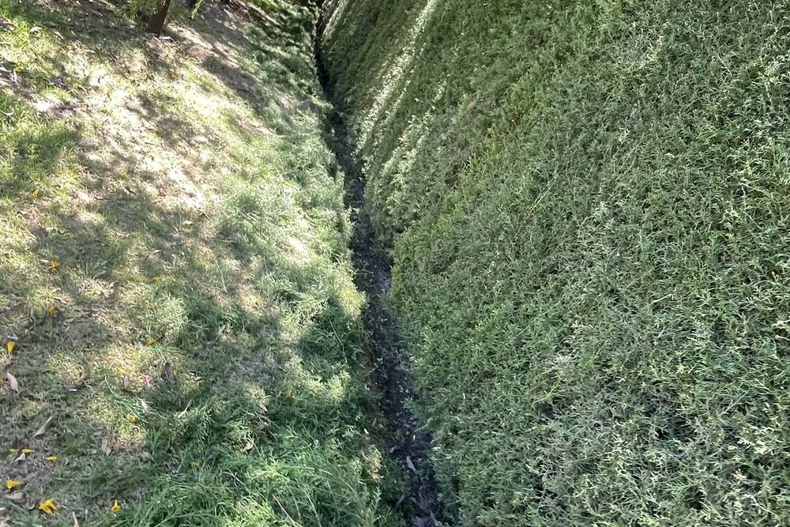
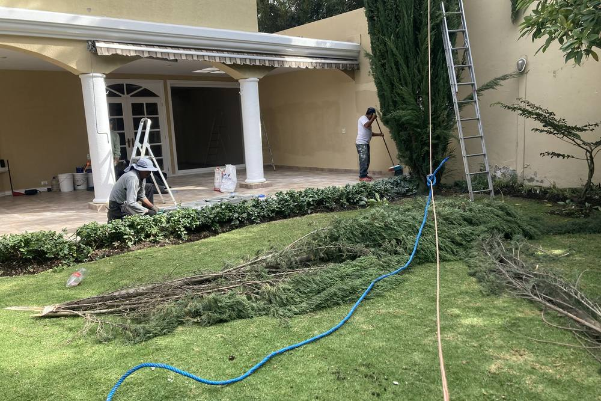
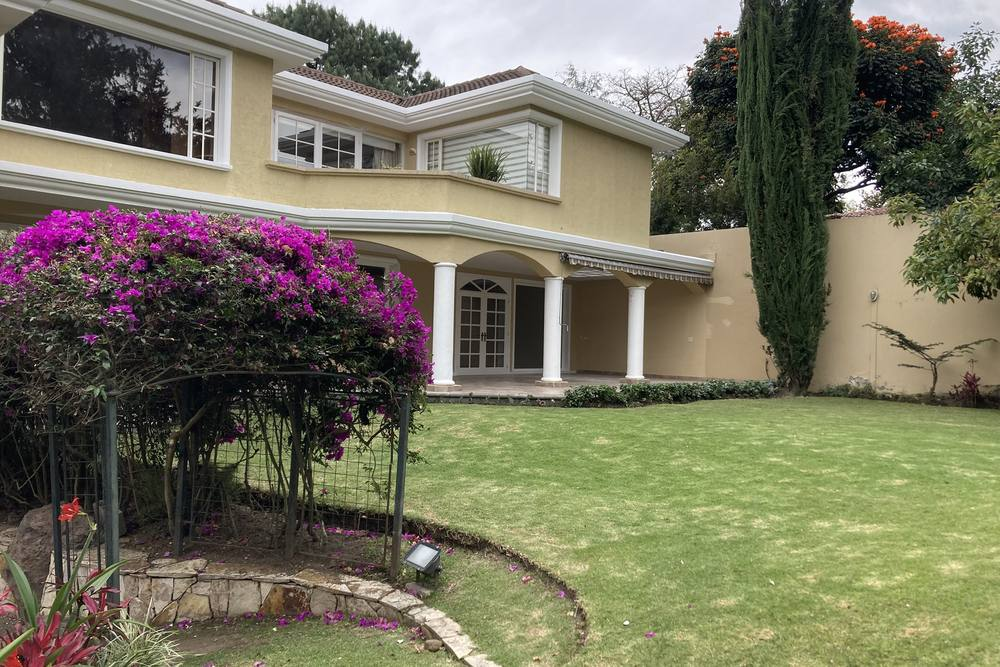
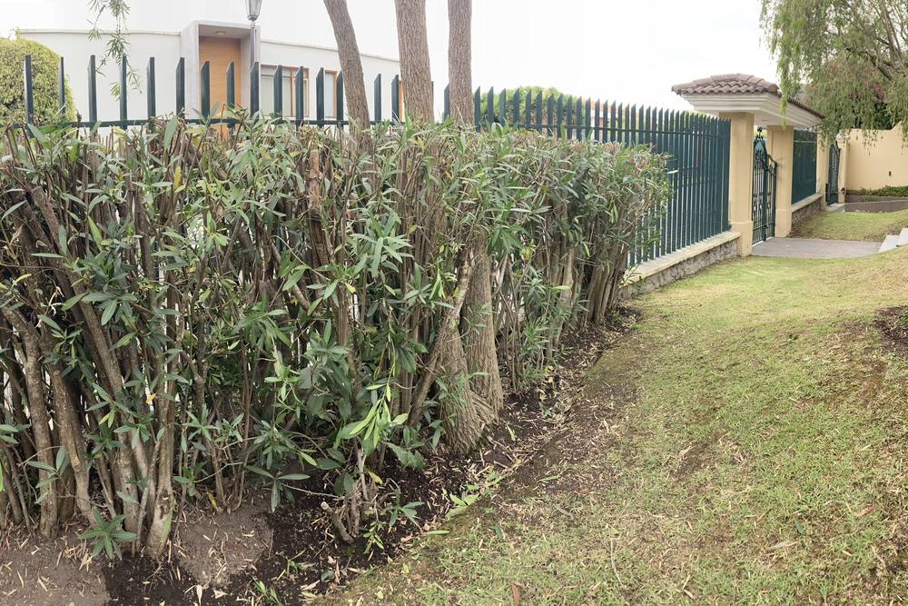
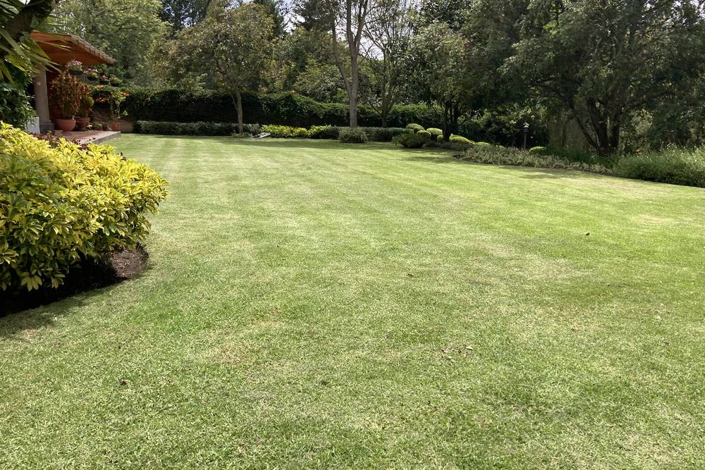
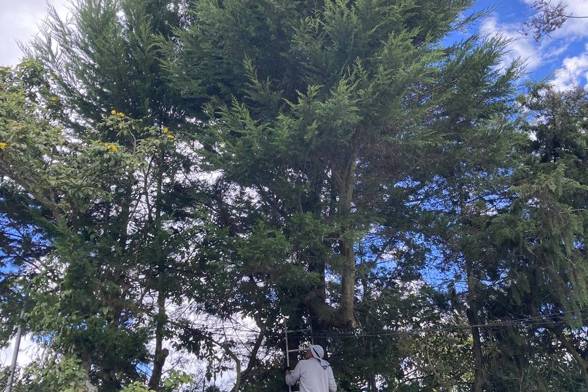
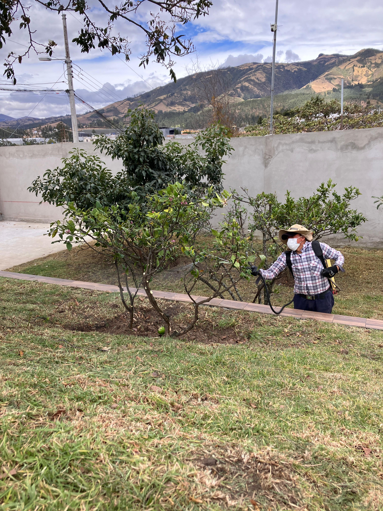

Nuestro trabajo
Galería de El Jardinero
Fotos y videos de algunos jardines en los que hemos trabajado.
📷 Fotos









Nuestro trabajo
Fotos y videos de algunos jardines en los que hemos trabajado.







